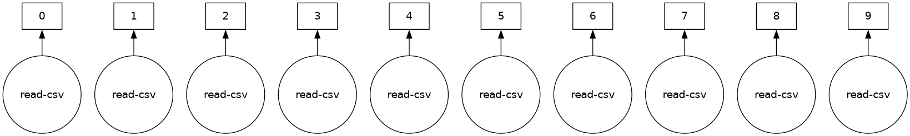
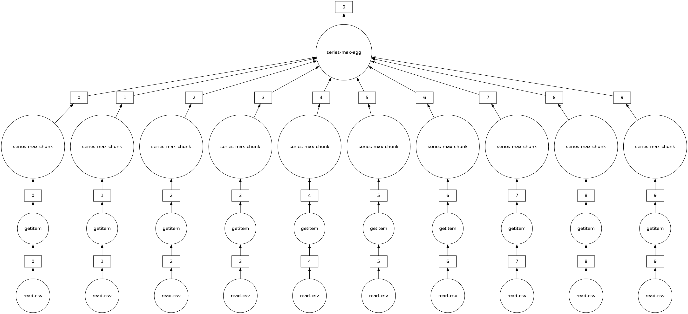
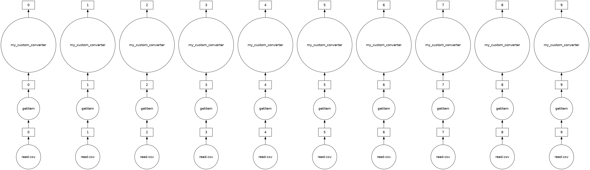

{kind=link}
你可以在 在线实验环境 中运行本 notebook  ，或在 GitHub 上查看源文件。
，或在 GitHub 上查看源文件。

Dask DataFrame —— 并行化的 pandas#
用起来像 pandas API，但面向并行与分布式工作流。
dask.dataframe 模块的核心是一个“分块并行”的 DataFrame 对象：接口像 pandas，却能用于并行和分布式场景。一个 Dask DataFrame 由许多沿索引切开、驻留内存的 pandas DataFrame 组成。对 Dask DataFrame 的一次操作，会在这些组成它的 pandas DataFrame 上触发许多 pandas 操作，并会顾及可能的并行度与内存限制。

相关文档
什么时候用 dask.dataframe#
pandas 很适合放得进内存的表格数据。关于 pandas，有一条经验法则：
- “内存大概要有数据集大小的 5 到 10 倍”
Wes McKinney（2017）在 10 things I hate about pandas
这里的“数据集大小”指的是 磁盘上 的大小。
当数据超过这条经验法则时，Dask 就开始有用了。
本 notebook 会使用纽约市航班数据。这个数据集大约只有 200MB，方便在合理时间内下载，但 dask.dataframe 可以扩展到 远大于内存 的数据集。
创建数据集#
创建本 notebook 会用到的数据集：
[1]:
%run prep.py -d flights
搭建本地集群#
创建一个本地 Dask 集群，并把它连到 client。这段代码先不用深究，Distributed 那一节会详细讲。
[2]:
from dask.distributed import Client
client = Client(n_workers=4)
client
[2]:
Client
Client-72cddec9-b25e-11f1-8fad-7ced8dc14072
| Connection method: Cluster object | Cluster type: distributed.LocalCluster |
| Dashboard: http://127.0.0.1:8787/status |
Cluster Info
LocalCluster
3e9d98fd
| Dashboard: http://127.0.0.1:8787/status | Workers: 4 |
| Total threads: 4 | Total memory: 15.61 GiB |
| Status: running | Using processes: True |
Scheduler Info
Scheduler
Scheduler-4cea1fba-f5f1-4005-b833-2c9a8abc708a
| Comm: tcp://127.0.0.1:44981 | Workers: 4 |
| Dashboard: http://127.0.0.1:8787/status | Total threads: 4 |
| Started: Just now | Total memory: 15.61 GiB |
Workers
Worker: 0
| Comm: tcp://127.0.0.1:38881 | Total threads: 1 |
| Dashboard: http://127.0.0.1:38825/status | Memory: 3.90 GiB |
| Nanny: tcp://127.0.0.1:35623 | |
| Local directory: /tmp/dask-worker-space/worker-chozdcru | |
Worker: 1
| Comm: tcp://127.0.0.1:37133 | Total threads: 1 |
| Dashboard: http://127.0.0.1:40891/status | Memory: 3.90 GiB |
| Nanny: tcp://127.0.0.1:36397 | |
| Local directory: /tmp/dask-worker-space/worker-7xz04mit | |
Worker: 2
| Comm: tcp://127.0.0.1:35711 | Total threads: 1 |
| Dashboard: http://127.0.0.1:46579/status | Memory: 3.90 GiB |
| Nanny: tcp://127.0.0.1:34611 | |
| Local directory: /tmp/dask-worker-space/worker-6y32m33x | |
Worker: 3
| Comm: tcp://127.0.0.1:33187 | Total threads: 1 |
| Dashboard: http://127.0.0.1:41947/status | Memory: 3.90 GiB |
| Nanny: tcp://127.0.0.1:34355 | |
| Local directory: /tmp/dask-worker-space/worker-vck3y95k | |
Dask 诊断仪表盘#
Dask Distributed 提供了很有用的 Dashboard，用来观察集群状态和计算过程。
如果你在 JupyterLab 或 Binder 上，可以用 Dask JupyterLab 扩展（环境里应该已经装好了）打开仪表盘图表：
点击左侧边栏的 Dask 图标
点击放大镜图标，它会自动连到当前活动的仪表盘（如果不行，可以把仪表盘链接 http://127.0.0.1:8787 填进输入框）
点击 “Task Stream”、“Progress Bar” 和 “Worker Memory”，这些图会在新标签页打开
按你的习惯重新排列标签页！
或者，点击上面 Client 详情里显示的仪表盘链接：http://127.0.0.1:8787/status。它会在新的浏览器标签页打开 Dashboard。
读取并使用数据集#
我们来读取美国若干年份的航班摘录。这些数据特指从纽约市三个机场出发的航班。
[3]:
import os
import dask
按惯例，我们把模块 dask.dataframe 导入为 dd，并把对应的 DataFrame 对象叫做 ddf。
说明：“Dask DataFrame” 这个词稍微有点超载。视上下文，它可能指模块，也可能指 DataFrame 对象。为避免混淆，本 notebook 里约定：
dask.dataframe（全小写）指 API，DataFrame（驼峰）指对象。
下面的文件名包含通配符 *，因此路径下所有匹配的文件都会读进同一个 DataFrame。
[4]:
import dask.dataframe as dd
ddf = dd.read_csv(
os.path.join("data", "nycflights", "*.csv"), parse_dates={"Date": [0, 1, 2]}
)
ddf
[4]:
| Date | DayOfWeek | DepTime | CRSDepTime | ArrTime | CRSArrTime | UniqueCarrier | FlightNum | TailNum | ActualElapsedTime | CRSElapsedTime | AirTime | ArrDelay | DepDelay | Origin | Dest | Distance | TaxiIn | TaxiOut | Cancelled | Diverted | |
|---|---|---|---|---|---|---|---|---|---|---|---|---|---|---|---|---|---|---|---|---|---|
| npartitions=10 | |||||||||||||||||||||
| datetime64[ns] | int64 | float64 | int64 | float64 | int64 | object | int64 | float64 | float64 | int64 | float64 | float64 | float64 | object | object | float64 | float64 | float64 | int64 | int64 | |
| ... | ... | ... | ... | ... | ... | ... | ... | ... | ... | ... | ... | ... | ... | ... | ... | ... | ... | ... | ... | ... | |
| ... | ... | ... | ... | ... | ... | ... | ... | ... | ... | ... | ... | ... | ... | ... | ... | ... | ... | ... | ... | ... | ... |
| ... | ... | ... | ... | ... | ... | ... | ... | ... | ... | ... | ... | ... | ... | ... | ... | ... | ... | ... | ... | ... | |
| ... | ... | ... | ... | ... | ... | ... | ... | ... | ... | ... | ... | ... | ... | ... | ... | ... | ... | ... | ... | ... |
Dask 此时还没有真正加载数据，它只是：
检查了输入路径，发现有十个匹配的文件
聪明地为每个分块创建了一组任务——在这个例子里，每个原始 CSV 文件对应一个任务
注意 DataFrame 对象的显示里还没有数据——Dask 只读了第一个文件的开头，用来推断列名和 dtype。
惰性求值（Lazy Evaluation）#
包括 Dask DataFrame 在内，大多数 Dask 集合都是惰性求值的：Dask 会立刻构建计算的逻辑（也就是任务图），但只在必要时才真正“求值”。你可以用 .visualize() 查看这张任务图。
Delayed 那一节会对此讲得更多。现在只要记住：需要调用 .compute() 才会触发真正的计算。
[5]:
ddf.visualize()
[5]:

有些函数（例如 len 和 head）也会触发计算。具体来说，调用 len 会：
加载实际数据（也就是把每个文件读进一个 pandas DataFrame）
再对每个 pandas DataFrame（也叫分区，partition）应用相应函数
把各部分的小计合并成最终总数
[6]:
# 加载数据并统计行数
len(ddf)
[6]:
9990
你可以像在 pandas 里那样查看数据的开头和结尾：
[7]:
ddf.head()
[7]:
| Date | DayOfWeek | DepTime | CRSDepTime | ArrTime | CRSArrTime | UniqueCarrier | FlightNum | TailNum | ActualElapsedTime | ... | AirTime | ArrDelay | DepDelay | Origin | Dest | Distance | TaxiIn | TaxiOut | Cancelled | Diverted | |
|---|---|---|---|---|---|---|---|---|---|---|---|---|---|---|---|---|---|---|---|---|---|
| 0 | 1990-01-01 | 1 | 1621.0 | 1540 | 1747.0 | 1701 | US | 33 | NaN | 86.0 | ... | NaN | 46.0 | 41.0 | EWR | PIT | 319.0 | NaN | NaN | 0 | 0 |
| 1 | 1990-01-02 | 2 | 1547.0 | 1540 | 1700.0 | 1701 | US | 33 | NaN | 73.0 | ... | NaN | -1.0 | 7.0 | EWR | PIT | 319.0 | NaN | NaN | 0 | 0 |
| 2 | 1990-01-03 | 3 | 1546.0 | 1540 | 1710.0 | 1701 | US | 33 | NaN | 84.0 | ... | NaN | 9.0 | 6.0 | EWR | PIT | 319.0 | NaN | NaN | 0 | 0 |
| 3 | 1990-01-04 | 4 | 1542.0 | 1540 | 1710.0 | 1701 | US | 33 | NaN | 88.0 | ... | NaN | 9.0 | 2.0 | EWR | PIT | 319.0 | NaN | NaN | 0 | 0 |
| 4 | 1990-01-05 | 5 | 1549.0 | 1540 | 1706.0 | 1701 | US | 33 | NaN | 77.0 | ... | NaN | 5.0 | 9.0 | EWR | PIT | 319.0 | NaN | NaN | 0 | 0 |
5 rows × 21 columns
ddf.tail()
# ValueError: Mismatched dtypes found in `pd.read_csv`/`pd.read_table`.
# +----------------+---------+----------+
# | Column | Found | Expected |
# +----------------+---------+----------+
# | CRSElapsedTime | float64 | int64 |
# | TailNum | object | float64 |
# +----------------+---------+----------+
# The following columns also raised exceptions on conversion:
# - TailNum
# ValueError("could not convert string to float: 'N54711'")
# Usually this is due to dask's dtype inference failing, and
# *may* be fixed by specifying dtypes manually by adding:
# dtype={'CRSElapsedTime': 'float64',
# 'TailNum': 'object'}
# to the call to `read_csv`/`read_table`.
pandas.read_csv 会先读完整份文件再推断类型，而 dask.dataframe.read_csv 只从文件开头（若使用通配符，则是第一个文件）抽样。推断出的类型随后会强制应用到所有分区。
这个例子里，样本推断出的类型是错的。前 n 行的 CRSElapsedTime 没有值（pandas 会推断成 float），后面却变成了字符串（object dtype）。注意 Dask 给出了关于类型不匹配的明确报错。遇到这种情况，你有几种选择：
用
dtype关键字直接指定类型。这是推荐做法，既最不容易出错（明确优于隐式），通常也最快。增大
sample关键字（按字节计）使用
assume_missing，让dask假定被推断为int（不允许缺失值）的列其实是float（允许缺失值）。我们这个例子并不适用。
这里我们用第一种做法，直接指定出问题的列的 dtype。
[8]:
ddf = dd.read_csv(
os.path.join("data", "nycflights", "*.csv"),
parse_dates={"Date": [0, 1, 2]},
dtype={"TailNum": str, "CRSElapsedTime": float, "Cancelled": bool},
)
[9]:
ddf.tail() # 现在可以了
[9]:
| Date | DayOfWeek | DepTime | CRSDepTime | ArrTime | CRSArrTime | UniqueCarrier | FlightNum | TailNum | ActualElapsedTime | ... | AirTime | ArrDelay | DepDelay | Origin | Dest | Distance | TaxiIn | TaxiOut | Cancelled | Diverted | |
|---|---|---|---|---|---|---|---|---|---|---|---|---|---|---|---|---|---|---|---|---|---|
| 994 | 1999-01-25 | 1 | 632.0 | 635 | 803.0 | 817 | CO | 437 | N27213 | 91.0 | ... | 68.0 | -14.0 | -3.0 | EWR | RDU | 416.0 | 4.0 | 19.0 | False | 0 |
| 995 | 1999-01-26 | 2 | 632.0 | 635 | 751.0 | 817 | CO | 437 | N16217 | 79.0 | ... | 62.0 | -26.0 | -3.0 | EWR | RDU | 416.0 | 3.0 | 14.0 | False | 0 |
| 996 | 1999-01-27 | 3 | 631.0 | 635 | 756.0 | 817 | CO | 437 | N12216 | 85.0 | ... | 66.0 | -21.0 | -4.0 | EWR | RDU | 416.0 | 4.0 | 15.0 | False | 0 |
| 997 | 1999-01-28 | 4 | 629.0 | 635 | 803.0 | 817 | CO | 437 | N26210 | 94.0 | ... | 69.0 | -14.0 | -6.0 | EWR | RDU | 416.0 | 5.0 | 20.0 | False | 0 |
| 998 | 1999-01-29 | 5 | 632.0 | 635 | 802.0 | 817 | CO | 437 | N12225 | 90.0 | ... | 67.0 | -15.0 | -3.0 | EWR | RDU | 416.0 | 5.0 | 18.0 | False | 0 |
5 rows × 21 columns
从远程存储读取#
如果你在考虑分布式计算，数据多半存在远程服务上（例如 Amazon S3 或 Google 云存储），而且格式更友好（例如 Parquet）。Dask 可以从这些远程位置 惰性且并行地 直接读取多种格式。
下面是从 Amazon S3 读取纽约出租车数据的写法：
ddf = dd.read_parquet(
"s3://nyc-tlc/trip data/yellow_tripdata_2012-*.parquet",
)
你还可以利用 Parquet 特有的优化，例如列选择和元数据处理。更多内容见 Dask 文档中关于 Parquet 的说明。
用 dask.dataframe 做计算#
我们来计算航班延误的最大值。
如果只用 pandas，我们会循环处理每个文件，找出各自的最大值，再在这些最大值里取总的最大。
import pandas as pd
files = os.listdir(os.path.join('data', 'nycflights'))
maxes = []
for file in files:
df = pd.read_csv(os.path.join('data', 'nycflights', file))
maxes.append(df.DepDelay.max())
final_max = max(maxes)
dask.dataframe 让我们能写类似 pandas 的代码，在大于内存的数据集上并行运算。
[10]:
%%time
result = ddf.DepDelay.max()
result.compute()
CPU times: user 17.5 ms, sys: 854 μs, total: 18.3 ms
Wall time: 45 ms
[10]:
409.0
这会为我们创建惰性计算，然后执行它。
注意： Dask 会尽快删除中间结果（例如每个文件对应的完整 pandas DataFrame）。因此你可以处理大于内存的数据集，但重复计算每次都得重新加载全部数据。（再跑一遍上面的代码，它比你预期的更快还是更慢？）
可以用 .visualize() 查看底层任务图：
[11]:
# 注意其中的并行
result.visualize()
[11]:

练习#
这一节你会做几个 dask.dataframe 计算。如果熟悉 pandas，这些应该不陌生。你需要想清楚何时调用 .compute()。
1. 数据集里有多少行？#
提示：你会怎么检查一个列表里有多少元素？
[12]:
# 在此编写代码
[13]:
len(ddf)
[13]:
9990
2. 总共有多少次未取消的航班？#
提示：使用 布尔索引。
[14]:
# 在此编写代码
[15]:
len(ddf[~ddf.Cancelled])
[15]:
9383
3. 每个机场总共有多少次未取消的航班？#
提示：使用 groupby。
[16]:
# 在此编写代码
[17]:
ddf[~ddf.Cancelled].groupby("Origin").Origin.count().compute()
[17]:
Origin
EWR 4132
JFK 1085
LGA 4166
Name: Origin, dtype: int64
4. 每个机场的平均起飞延误是多少？#
[18]:
# 在此编写代码
[19]:
ddf.groupby("Origin").DepDelay.mean().compute()
[19]:
Origin
EWR 12.500968
JFK 17.053456
LGA 10.169227
Name: DepDelay, dtype: float64
5. 一周中哪一天的平均起飞延误最严重？#
[20]:
# 在此编写代码
[21]:
ddf.groupby("DayOfWeek").DepDelay.mean().idxmax().compute()
[21]:
5
6. 假设 distance 列有误，你需要给所有值加 1，该怎么做？#
[22]:
# 在此编写代码
[23]:
ddf["Distance"].apply(
lambda x: x + 1
).compute() # 先不用担心这个警告，下一节会讨论
# 或者
(ddf["Distance"] + 1).compute()
/usr/share/miniconda/envs/dask-tutorial/lib/python3.10/site-packages/dask/dataframe/core.py:4139: UserWarning:
You did not provide metadata, so Dask is running your function on a small dataset to guess output types. It is possible that Dask will guess incorrectly.
To provide an explicit output types or to silence this message, please provide the `meta=` keyword, as described in the map or apply function that you are using.
Before: .apply(func)
After: .apply(func, meta=('Distance', 'float64'))
warnings.warn(meta_warning(meta))
[23]:
0 320.0
1 320.0
2 320.0
3 320.0
4 320.0
...
994 417.0
995 417.0
996 417.0
997 417.0
998 417.0
Name: Distance, Length: 9990, dtype: float64
共享中间结果#
做上面这些计算时，有时会对同一操作算了不止一次。对大多数操作，dask.dataframe 会保存参数，从而让重复计算被共享，只真正算一次。
例如，我们来计算所有未取消航班起飞延误的均值和标准差。因为 Dask 操作是惰性的，这些值还不是最终结果，只是得到结果所需的步骤。
如果用两次 compute 分别计算，中间计算不会被共享。
[24]:
non_canceled = ddf[~ddf.Cancelled]
mean_delay = non_canceled.DepDelay.mean()
std_delay = non_canceled.DepDelay.std()
[25]:
%%time
mean_delay_res = mean_delay.compute()
std_delay_res = std_delay.compute()
CPU times: user 53.7 ms, sys: 6.13 ms, total: 59.8 ms
Wall time: 144 ms
dask.compute#
这次试着把两者一起传给一次 compute 调用。
[26]:
%%time
mean_delay_res, std_delay_res = dask.compute(mean_delay, std_delay)
CPU times: user 41.6 ms, sys: 3.35 ms, total: 45 ms
Wall time: 88.2 ms
使用 dask.compute 大约只要一半时间。因为调用 dask.compute 时，两个结果的任务图会被合并，共享的操作只做一次而不是两次。具体来说，dask.compute 只会各做一次：
对
read_csv的调用过滤（
df[~df.Cancelled]）一部分必要的归约（
sum、count）
要看多个结果合并后的任务图（以及哪些部分是共享的），可以使用 dask.visualize 函数（你可能想加上 filename='graph.pdf' 把图存到磁盘，方便放大查看）：
[27]:
dask.visualize(mean_delay, std_delay, engine="cytoscape")
[27]:
.persist()#
使用分布式调度器时（后续 notebook 会更详细地讲调度器），你可以把一些 经常要用的数据 留在 分布式内存 里。
persist 会生成 “Futures”（后面也会讲），并把它们存放在与输出相同的结构里。任何能放进内存的数据或计算都可以使用 persist。
如果你只想分析从 JFK 机场出发、且未被取消的航班，可以像上一节那样调用两次 compute：
[28]:
non_cancelled = ddf[~ddf.Cancelled]
ddf_jfk = non_cancelled[non_cancelled.Origin == "JFK"]
[29]:
%%time
ddf_jfk.DepDelay.mean().compute()
ddf_jfk.DepDelay.sum().compute()
CPU times: user 59 ms, sys: 5.86 ms, total: 64.8 ms
Wall time: 154 ms
[29]:
18503.0
也可以考虑把那一部分数据 persist 到内存里。
看仪表盘上的 “Graph” 图，红色方块表示作为 Future 存在内存里的 persist 数据。你还会注意到 Worker Memory（另一张仪表盘图）占用上升。
[30]:
ddf_jfk = ddf_jfk.persist() # 立刻把控制权交还给你
[31]:
%%time
ddf_jfk.DepDelay.mean().compute()
ddf_jfk.DepDelay.std().compute()
CPU times: user 63.4 ms, sys: 4.37 ms, total: 67.8 ms
Wall time: 126 ms
[31]:
36.85799641792652
在这份 persist 过的数据上做分析会更快，因为我们不用重复加载和筛选（未取消、从 JFK 出发）。
在 Dask DataFrame 上使用自定义代码#
dask.dataframe 只覆盖了 pandas API 中较小但常用的一部分。
之所以有这个限制，有两个原因：
Pandas 的 API 非常大
有些操作本身就很难并行，例如排序。
另外，像 set_index 这类重要操作虽然能用，但比 pandas 慢，因为它们包含大量数据洗牌（shuffle），还可能写磁盘。
如果你想用一些 Dask DataFrame 还没实现（或没法实现）的自定义函数，该怎么办？
可以在 Dask issue tracker 开一个 issue，问问实现这个函数有多可行，也可以考虑把函数贡献给 Dask。
如果它是自定义函数，或实现起来很棘手，dask.dataframe 提供了几种方法，让自定义函数更容易作用在 Dask DataFrame 上：
`map_partitions<https://docs.dask.org/en/latest/generated/dask.dataframe.DataFrame.map_partitions.html>`__：在 Dask DataFrame 的每个分区（每个 pandas DataFrame）上运行函数`map_overlap<https://docs.dask.org/en/latest/generated/dask.dataframe.rolling.map_overlap.html>`__：在每个分区上运行函数，并在相邻分区之间共享若干行`reduction<https://docs.dask.org/en/latest/generated/dask.dataframe.Series.reduction.html>`__：用于自定义的按行归约操作
我们快速看一下 map_partitions() 函数：
[32]:
help(ddf.map_partitions)
Help on method map_partitions in module dask.dataframe.core:
map_partitions(func, *args, **kwargs) method of dask.dataframe.core.DataFrame instance
Apply Python function on each DataFrame partition.
Note that the index and divisions are assumed to remain unchanged.
Parameters
----------
func : function
The function applied to each partition. If this function accepts
the special ``partition_info`` keyword argument, it will receive
information on the partition's relative location within the
dataframe.
args, kwargs :
Positional and keyword arguments to pass to the function.
Positional arguments are computed on a per-partition basis, while
keyword arguments are shared across all partitions. The partition
itself will be the first positional argument, with all other
arguments passed *after*. Arguments can be ``Scalar``, ``Delayed``,
or regular Python objects. DataFrame-like args (both dask and
pandas) will be repartitioned to align (if necessary) before
applying the function; see ``align_dataframes`` to control this
behavior.
enforce_metadata : bool, default True
Whether to enforce at runtime that the structure of the DataFrame
produced by ``func`` actually matches the structure of ``meta``.
This will rename and reorder columns for each partition,
and will raise an error if this doesn't work,
but it won't raise if dtypes don't match.
transform_divisions : bool, default True
Whether to apply the function onto the divisions and apply those
transformed divisions to the output.
align_dataframes : bool, default True
Whether to repartition DataFrame- or Series-like args
(both dask and pandas) so their divisions align before applying
the function. This requires all inputs to have known divisions.
Single-partition inputs will be split into multiple partitions.
If False, all inputs must have either the same number of partitions
or a single partition. Single-partition inputs will be broadcast to
every partition of multi-partition inputs.
meta : pd.DataFrame, pd.Series, dict, iterable, tuple, optional
An empty ``pd.DataFrame`` or ``pd.Series`` that matches the dtypes
and column names of the output. This metadata is necessary for
many algorithms in dask dataframe to work. For ease of use, some
alternative inputs are also available. Instead of a ``DataFrame``,
a ``dict`` of ``{name: dtype}`` or iterable of ``(name, dtype)``
can be provided (note that the order of the names should match the
order of the columns). Instead of a series, a tuple of ``(name,
dtype)`` can be used. If not provided, dask will try to infer the
metadata. This may lead to unexpected results, so providing
``meta`` is recommended. For more information, see
``dask.dataframe.utils.make_meta``.
Examples
--------
Given a DataFrame, Series, or Index, such as:
>>> import pandas as pd
>>> import dask.dataframe as dd
>>> df = pd.DataFrame({'x': [1, 2, 3, 4, 5],
... 'y': [1., 2., 3., 4., 5.]})
>>> ddf = dd.from_pandas(df, npartitions=2)
One can use ``map_partitions`` to apply a function on each partition.
Extra arguments and keywords can optionally be provided, and will be
passed to the function after the partition.
Here we apply a function with arguments and keywords to a DataFrame,
resulting in a Series:
>>> def myadd(df, a, b=1):
... return df.x + df.y + a + b
>>> res = ddf.map_partitions(myadd, 1, b=2)
>>> res.dtype
dtype('float64')
Here we apply a function to a Series resulting in a Series:
>>> res = ddf.x.map_partitions(lambda x: len(x)) # ddf.x is a Dask Series Structure
>>> res.dtype
dtype('int64')
By default, dask tries to infer the output metadata by running your
provided function on some fake data. This works well in many cases, but
can sometimes be expensive, or even fail. To avoid this, you can
manually specify the output metadata with the ``meta`` keyword. This
can be specified in many forms, for more information see
``dask.dataframe.utils.make_meta``.
Here we specify the output is a Series with no name, and dtype
``float64``:
>>> res = ddf.map_partitions(myadd, 1, b=2, meta=(None, 'f8'))
Here we map a function that takes in a DataFrame, and returns a
DataFrame with a new column:
>>> res = ddf.map_partitions(lambda df: df.assign(z=df.x * df.y))
>>> res.dtypes
x int64
y float64
z float64
dtype: object
As before, the output metadata can also be specified manually. This
time we pass in a ``dict``, as the output is a DataFrame:
>>> res = ddf.map_partitions(lambda df: df.assign(z=df.x * df.y),
... meta={'x': 'i8', 'y': 'f8', 'z': 'f8'})
In the case where the metadata doesn't change, you can also pass in
the object itself directly:
>>> res = ddf.map_partitions(lambda df: df.head(), meta=ddf)
Also note that the index and divisions are assumed to remain unchanged.
If the function you're mapping changes the index/divisions, you'll need
to clear them afterwards:
>>> ddf.map_partitions(func).clear_divisions() # doctest: +SKIP
Your map function gets information about where it is in the dataframe by
accepting a special ``partition_info`` keyword argument.
>>> def func(partition, partition_info=None):
... pass
This will receive the following information:
>>> partition_info # doctest: +SKIP
{'number': 1, 'division': 3}
For each argument and keyword arguments that are dask dataframes you will
receive the number (n) which represents the nth partition of the dataframe
and the division (the first index value in the partition). If divisions
are not known (for instance if the index is not sorted) then you will get
None as the division.
ddf 里的 “Distance” 列目前以英里为单位。假设我们想把它转成公里，并且已经有下面这个通用辅助函数。这时可以用 map_partitions，把函数并行应用到内部的每个 pandas DataFrame 上。
[33]:
import pandas as pd
def my_custom_converter(df, multiplier=1):
return df * multiplier
meta = pd.Series(name="Distance", dtype="float64")
distance_km = ddf.Distance.map_partitions(
my_custom_converter, multiplier=0.6, meta=meta
)
[34]:
distance_km.visualize()
[34]:

[35]:
distance_km.head()
[35]:
0 191.4
1 191.4
2 191.4
3 191.4
4 191.4
Name: Distance, dtype: float64
什么是 meta？#
因为 Dask 是惰性执行的，它并不总有足够信息来推断某些操作的输出结构（包括数据类型）。
meta 是给 Dask 的一个 提示，说明你的计算输出长什么样。重要的是，meta 不会去干涉 最终的输出结构。在 Dask 能确定真实输出结构之前，它会先使用这个 meta。
定义 meta 的方法有很多，我们建议用一个很小的 pandas Series 或 DataFrame，使其结构与最终输出一致。
关闭本地 Dask 集群#
养成习惯：自己创建的 Dask 集群用完后都关掉。
[36]:
client.shutdown()